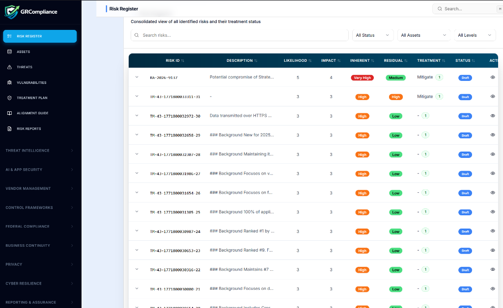

End The
Heatmap Theater.
Static risk registers are where visibility goes to die. Quantify your exposure in real-time. Move from subjective 1-5 scores to data-driven risk intelligence that actually protects your revenue.
Automated Key Risk Indicators (KRIs) Live Tracking
Cold Hard
Impact
CISOs and Boards are tired of colorful circles on a grid. They want to know the financial and operational cost of failure. Our engine links risk directly to your controls, evidence, and business-critical assets.
The Risk
Command Portal

01. Centralized Oversight
A unified dashboard mapping the workflow between Assets, Threats, and Treatment Plans. Monitor your total risk posture with real-time counters and overdue action trackers.

02. Dynamic Heatmaps
Visualize Inherent vs. Residual risk side-by-side. Our grids aren't just for show—they are powered by AI threat intelligence that identifies new CVEs matching your specific tech stack.

03. Granular Register
Drill down into every identified risk ID. Track descriptions, impact levels, and specific mitigation treatments with high-contrast, status-driven UI indicators.
Quantified
Regsiters
Move beyond High/Medium/Low. Our platform calculates risk scores based on control coverage, asset criticality, and historical threat data.
Live Control
Linking
A risk is only managed if its controls are working. We link every risk entry to real-time evidence. If a control fails, the risk score spikes automatically.
Automated
Forecasting
Use KRIs to predict potential breaches before they happen. Our agent alerts you when risk vectors exceed your defined appetite thresholds.